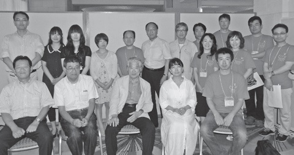

［前列左から］05Fl佐々木,19Tu坂東,01Tp頼則,19Fl白川,31Eu高嶋
［後列左から］28Tb 長尾,45Fl三谷,55Pr槌谷,55Pr香西,31Pr井上,
16Fl和田,23Cl上田,31Tr高島,31Fl平石,31Tu塩野,31Fl岡崎,
31Cl三山,31Tb永井
［他に］27Tb永井,32Tp三好,32Tb下野夫妻 部活は苦しくもあり懐かしい、達成感と焦燥感が入り混じり、共に過ごした仲間とあの時間は貴重なものであったことが後になって分かる。また楽器を手にしたことで音楽を体で聞くことが出来るようになったように思う。
そのことを忘れないうちに（ボケないうちに！？）思い出してOB 有志各位にシリーズで語って頂きます。
トップバッターは合地仁美さん（TBB19 代・クラリネット）です。
合地仁美（TBB19代）
さして音楽に興味があったわけでもない。音譜も読めない。そんな私がなぜブラスバンド部に入ったのか？―中学時代に遡り、ブラバンの先輩だけが勧誘してくれたから、という不純な動機で吹奏楽を始め、そして、中学からの続きで、なんとなく当たり前のように高々ブラスバンド部に入部。
暑さの夏には、涼しさを求め、風の吹き抜ける場所を探して移動し、中庭の大楠木の下でクラリネットを吹いたり、また、寒さの冬には、練習場所である、西棟一階南端の教室（135 号教室だったかな？ 間違っていたら、ごめんなさいm(_)m）にこもって吹いたり…。
部活帰りに友達と立ち寄った「まとや」のかき氷、「巴堂」のぶどう餅とソフトクリーム、「ごんな」のうまいぶん、そしてたまに、ええぶん。
夏合宿は食堂の上の作法室に寝泊りした。男子がどこに泊まったかは、よー知らん。
そして、準備を重ねに重ねて迎えた定期演奏会は、大型台風のため、当日急遽中止となった、幻の定演。
うまく吹けないと、よく笑ってごまかしていた。そして、怒られた。
自分でもいやになるくらい下手くそだった。だけど、下手くそなことをあまり気にしていなかった気がする。とにかく楽しかった。
高々を卒業して、女子大に入ってからも、一年のブランクの後、同期の板東くんに誘われ、他大学の吹奏楽団に入る。
相変わらず音楽は、よーわからんまま、結局９年間吹奏楽を続けることになる。
未だにクラリネットは下手くそなままだけど、おかげでたくさんの友だちに出会えて、本当に楽しい学生時代を送ることができた。
私にとってのブラスバンドは、みんなでひとつのものを作り上げるおもしろさであったと思う。
高高吹奏楽部ＯＢ会関東支部
会 長 頼則絢太（S34年卒）
事務局 坂東和美（S52年卒）